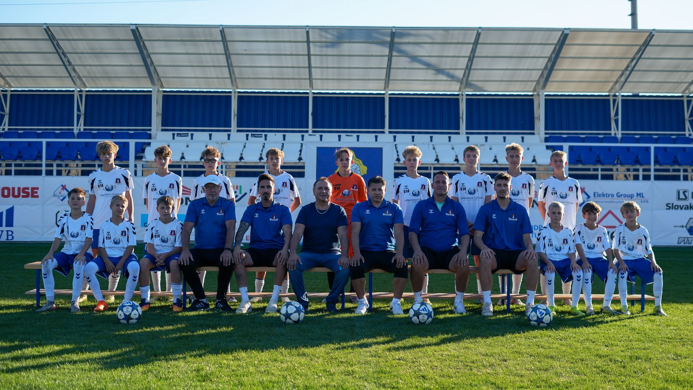
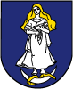

Posledný zápas
FA Matúšova zem Horné Saliby/Tomášikovo B 1:4 OK Častkovce
OK Častkovce
Návrh webu, nie oficiálna stránka klubuNávrh nového webu OK Častkovce, nie oficiálna stránka klubu. Oficiálny web: okcastkovce.sk

Starší žiaci B
III. liga U15 skupina "B"
Posledný zápas
Najbližší zápas
Zápas zatiaľ nie je v rozpise.
Ďalší zápas
Zápas zatiaľ nie je v rozpise.
Súpiska tejto kategórie zatiaľ nie je zverejnená.
Marek Ladický
Marek Mišák
Branislav Milata
Vladimír Korytina
Zápasy zatiaľ nie sú zverejnené.
so 24. 10. 2026
ne 18. 10. 2026
ne 11. 10. 2026
ne 4. 10. 2026
ne 27. 9. 2026
ne 20. 9. 2026
ne 13. 9. 2026
ne 6. 9. 2026
ne 30. 8. 2026
ne 23. 8. 2026
ne 16. 8. 2026
ne 14. 6. 2026
ne 7. 6. 2026
ne 31. 5. 2026
ne 17. 5. 2026
ne 10. 5. 2026
ne 3. 5. 2026
ne 26. 4. 2026
ne 19. 4. 2026
ut 4. 11. 2025
št 23. 10. 2025
ne 19. 10. 2025
ne 5. 10. 2025
ne 28. 9. 2025
ne 21. 9. 2025
ne 14. 9. 2025
ne 31. 8. 2025
Výsledky si môžete pozrieť aj na sportnet.sme.sk.
